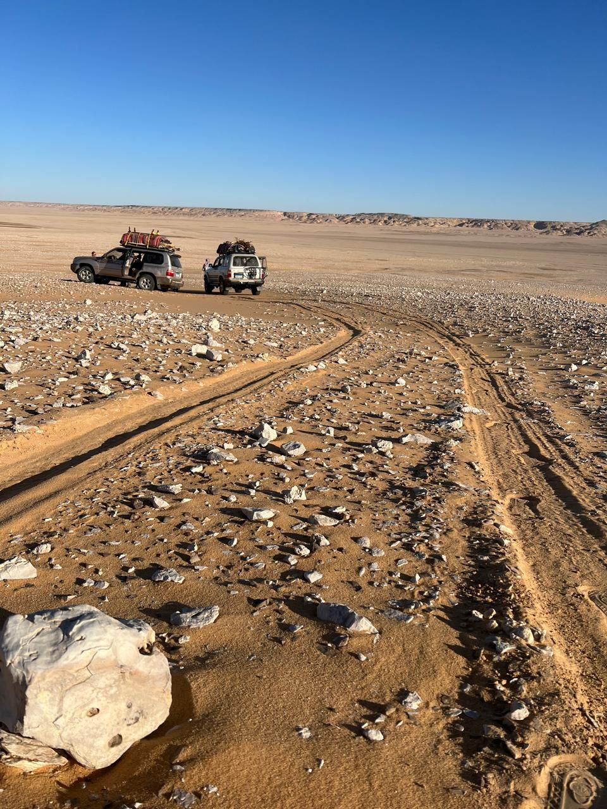
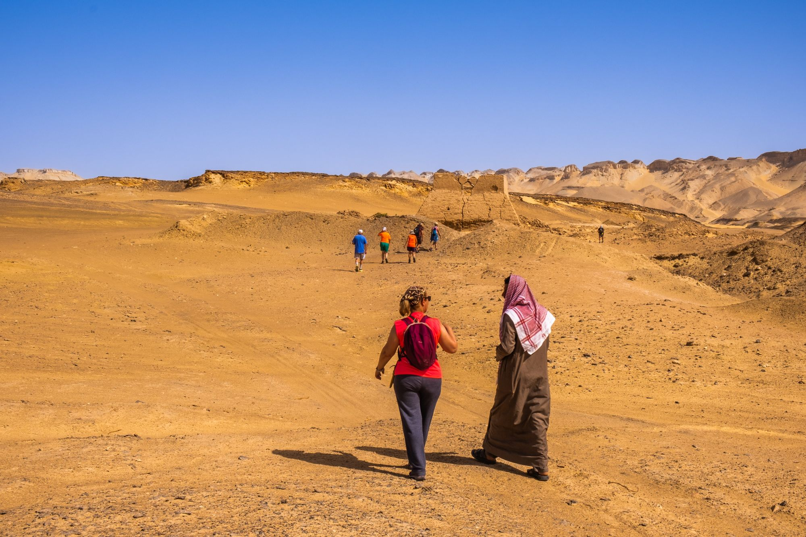
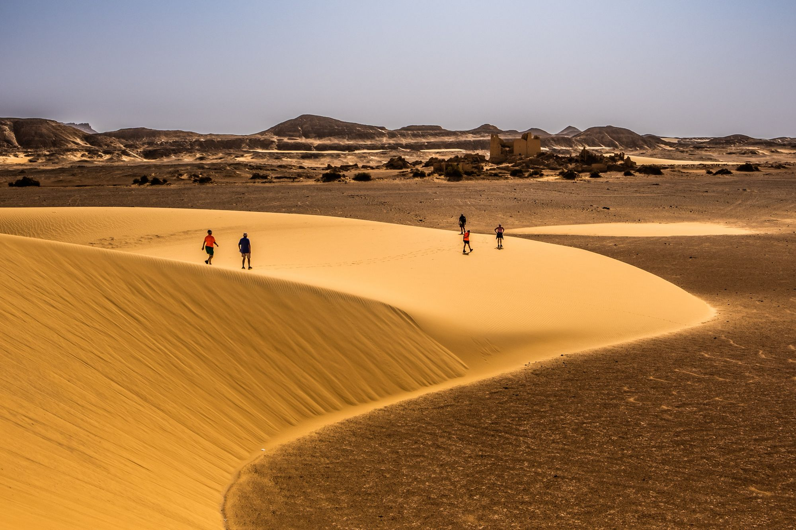

مسارات عبرالصحراء الليبية.
مصممة ليشعر كل مسافر بجوهر المكان: برامج مرنة من يوم واحد إلى رحلات تمتد لأسابيع، بين الواحات وبحر الرمال الأعظم.
ما يتضمنهكل مسار.
المعايير نفسها سواء سافرت يومًا واحدًا أو ثلاثة أسابيع.
برامج مرنة
من رحلات اليوم الواحد إلى رحلات لعدة أسابيع، مصممة وفق تواريخك وإيقاعك.
مواقع تخييم مختارة بعناية
حماية من الرياح، وأفق صافٍ، وأجمل ضوء في بداية النهار ونهايته.
السلامة في كل سيارة
ملاحة GPS وهواتف بالأقمار الصناعية في جميع سياراتنا ذات الدفع الرباعي.
مرشدون وسائقون بدو
يقود كل رحلة أكثر الناس معرفة بهذه الدروب.
زيارات الواحات
سيوة والبحرية والفرافرة والداخلة: عيون وبساتين نخيل وقرى.
مواقع أثرية
معابد وجبانات وقلاع، كثير منها بعيد عن المسارات المعتادة.
مغامرة بينالواحات.
بين الواحات وبحر الرمال الأعظم، بالدفع الرباعي أو على الجمال أو سيرًا على الأقدام. اجمع بينها كما تحب.
عبور بحر الرمال الأعظم بالدفع الرباعي انطلاقًا من البحرية، مرورًا بالتكوينات الصخرية في الصحراء البيضاء.

- 01عبور بحر الرمال الأعظم
- 02الصحراء البيضاء والجبل الكريستالي
- 03سائقون بدو ذوو خبرة
- 04GPS وهواتف بالأقمار الصناعية
- 05تخييم تحت النجوم
- 06ليالٍ في Sand Gate Camp
رحلات هادئة على دروب القوافل القديمة، بالإيقاع الذي عُبرت به الصحراء دائمًا.

- 01دروب قوافل تاريخية
- 02جمّالة تقليديون
- 03مراحل قصيرة وأمسيات طويلة
- 04مجموعات صغيرة
- 05سيارة دعم عند الطلب
- 06يمكن دمجها مع أيام بالدفع الرباعي
مسارات مشي إلى الأخاديد والفن الصخري كالنقوش، وأطلال قلاع من العصر الروماني.

- 01أخاديد وهضاب
- 02نقوش وفن صخري
- 03أطلال قلاع رومانية
- 04نقل الأمتعة بالسيارة
- 05مسافات تناسب المجموعة
- 06جولات مشي أثرية
الواحاتوالآثار.
بساتين نخيل وعيون ساخنة وقرى من الطين ومقابر منحوتة في الصخر ومعابد منسية: محطات تمنح كل مسار معناه.




اخترمسارك.
رحلتا عبور مميزتان لمدة ١١ يومًا من القاهرة، أو مسار مصمم لك.

القاهرة – الخارجة
البحرية والفرافرة والداخلة والخارجة: الصحراء البيضاء وبحر الرمال الأعظم والقلاع الرومانية في الجنوب.

القاهرة – الفيوم
البحرية والفرافرة والفيوم: كهف الجارة وكثبان أبو محرّق ووادي الحيتان.

حسب الطلب
رحلات خاصة، أو رحلات تصوير، أو مشي، أو قوافل جمال. أخبرنا بما تتخيله.
للحجز،تحدث معنا.
لا يوجد حجز آلي: نُعدّ كل رحلة خصيصًا لك. أخبرنا بالتواريخ وعدد المسافرين وطريقتك المفضلة في السفر، وسنرد عليك شخصيًا بالمواعيد المتاحة وعرض السعر.
مكتب الحجوزات من 08:00 إلى 20:00 بتوقيت مصر. تفضّل استمارة؟ انتقل إلى صفحة الاتصال